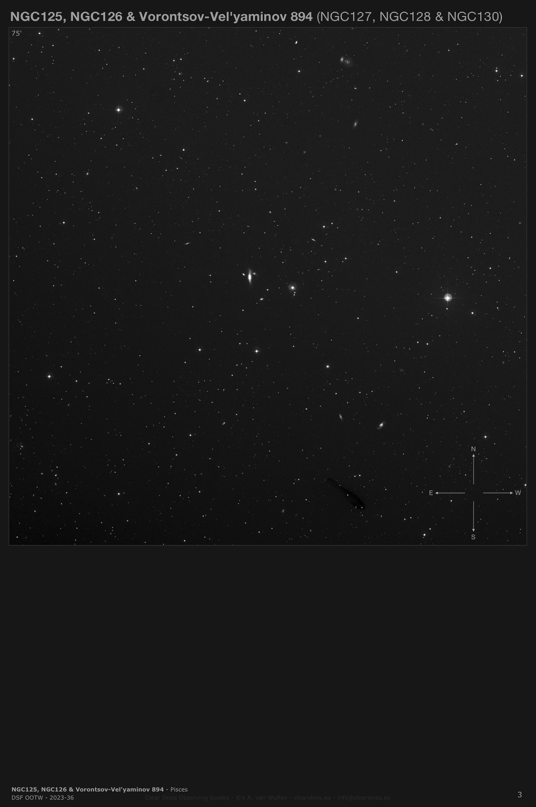
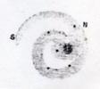
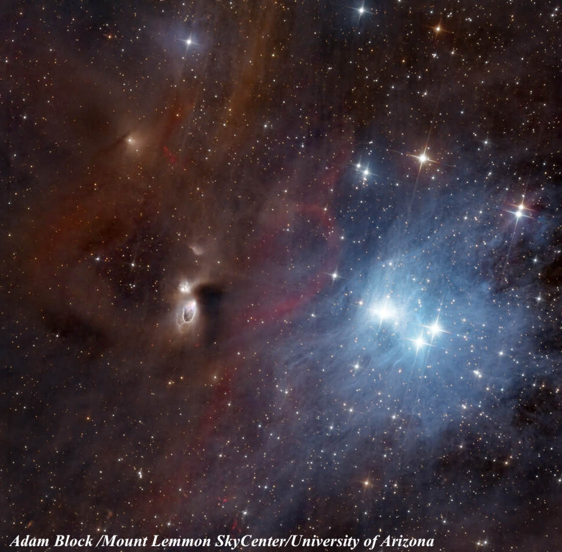
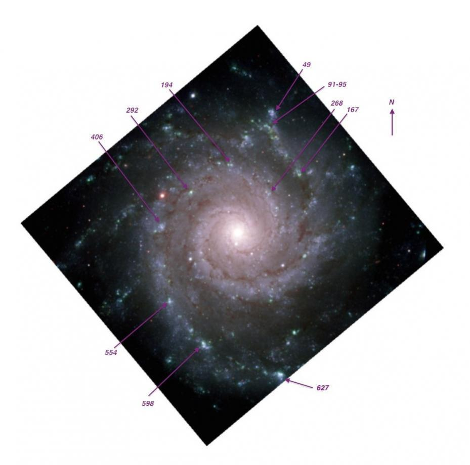

M74
- Name: M74 = NGC 628
- Name: V = 9.4; Size 10.5'x9.5
- Surf Br: 14.2
- Distance: ~30 million light years
As a bright supernova (2013ej) was discovered in M74 just over a month ago, many amateurs turned their gaze to this beautiful "grand design" spiral of type SA(s)c.
Due to its face-on orientation, small core and low surface brightness halo, M74 is certainly among the most challenging Messier galaxies for those viewing in light-polluted conditions. I remember M74 giving me fits when I first started logging the Messier list in 1977 with a 6-inch reflector from the bright skies over Berkeley, California and it was satisfying just to glimpse a dim glow. Once I traveled to dark skies a year later, I realized my finder scope would do the trick.
In the 1976 paper "H II regions in NGC 628. I. Positions and sizes.", Paul Hodge cataloged no less than 730 individual HII knots in M74. Visually, the brightest "knot" (HII complex/stellar association) is #627 near the end of the southern arm. How small a scope will reveal this object?
A 1980 photometric study of the HII regions by Hodge and Kennicutt "H II regions in NGC 628. III - H-alpha luminosities and the luminosity function" provided the H-alpha flux of 593 regions. This image from the paper shows how clumps of HII regions define the spiral arms. #627 is the large clump at the bottom of the image, though it is not circled.

Visually, M74 really comes to life in 16" and larger scopes with two main spiral arms wrapping around the core and some of the brighter HII regions starting to pepper the arms. Lord Rosse in December of 1848 first detected the spiral nature of this galaxy in 1848 (one of 14 "spiral or curvilinear nebulae" he discovered before 1850). Observing with his 72-inch f/8.8 speculum telescope, he simply noted
13 Dec 1848. Rough sketch made. Spiral?

14 Dec 1848. Confirmed last night's observations; feel confident it is a spiral.
In Jimi's 48-inch, the amount of detail was stunning and the notes below were scribbled during a few minutes at the eyepiece.
Beautiful face-on spiral with long, graceful arms wrapping around an intense 1' core that increases towards the center, but there is no sharp nucleus. At first glance at 375x there appeared to be four arms, but with a more careful look there are two main arms that each wrap more than 360° around the core as well as a couple of side branches. Each arm is studded with a number of non-stellar HII regions that highlight the arms. In addition, a number of stars are superimposed, both in the inner region (two faint stars are within 25" of the center) and around the edge of the halo, which extends to 7'-8' diameter.
The more prominent "southern" arm is very regular - emerging from the core on the south side and wrapping counterclockwise around the core to the north, unwinding gradually as it curves to the east and then pulls away from the central region more suddenly on the south side. This arm is very patchy and delineated by a large number of HII knots with the two most prominent ones near the outer southern end. The "northern" arm begins to emerge from north of the core, tightly wraps counterclockwise around the core, passing near or through a few superimposed stars on the south side of the core, unwinding more as it stretches again to the north. The arm structure is a bit more complex on the north side due to side branches and the embedded HII knots are more scattered.
The HII regions were viewed more carefully at 610x. The following identifications are from Paul Hodge's 1976 paper. The brightest is #627, near the end of the outer southern arm 2.7' SSW of center. It appeared fairly bright, fairly small, round, ~20" diameter. Moving clockwise along this arm towards the core, the next prominent knot is #592-598, situated 2.2' SSE of center. It was slightly fainter than #627, round, 15" diameter. Next in line is #550-555, a faint round knot of 10" situated 1.8' SE of center. East of the core by 1.5' is #406, a very faint, round 10" knot situated 36" S of a superimposed mag 14.5 star. Just 30" W of this star and 1.2' NE of center is #292, a fairly faint, very small knot, ~8" diameter. Continuing inward along this arm, the next knot is #194-197, a very faint hazy knot 1.2' N of center. Finally, less than 1' NW of center is another very faint patch with Hodge numbers #260-268.
There were no notable knots on the inner southern portion of the northern arm, but a noticeable clump of knots is on the NW portion of this arm. First was #167-168, a faint 10" knot 1.6' NW of center. Continuing outward 2.0' NNW of center is a faint, elongated patch, ~25" diameter, consisting of #85-101 and #49 at the north end of the glow. I didn't search the outer region of the halo for additional HII knots, except noted #330, a 10" knot situated between two mag 12-13 stars at the eastern edge of halo, 8' from center.
The labeled image below is from the Gemini North Telescope on Mauna Kea where Howard Banich and I were fortunate to have an insider's tour last year (that's my wife, not Howard ;-).

I've generally only labeled a single listing from the Hodge paper, though visually each "knot" I noted above in the 48-inch probably includes multiple clusters and HII complexes.

"Give it a go and let us know!
Good luck and great viewing!"
Steve's follow-up — September 3rd, 2013, 02:20 AM
It was interesting to take a look at the Ivanov et al paper "Stellar associations and aggregates in NGC 628".
Matching up three of the visually brightest HII complexes with the Ivanov "Associations & Aggregates" --
Hodge 627 = Ivanov 52 V = 15.9
Hodge 598 = Ivanov 90 V = 16.6
Hodge 049 = Ivanov 60 V = 16.6
Hodge 554 = Ivanov 108 is listed at V = 16.4 but I found it fainter than the latter two above.
If I'm interpreting the last column correctly, which gives the corresponding Hodge number, it's offset or shifted by one line on many or most objects.